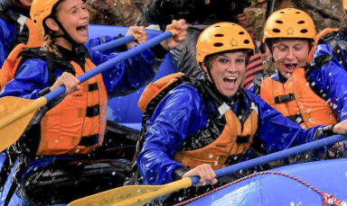

At Elite Rafting Co., our mission is to offer unforgettable white-water adventures that connect people to the spirit of Uganda’s rivers through professionalism, safety, and heart. We believe in courage, connection, and respect—for the river, our guests, and one another—upholding a promise of adventure and empowerment in every ride. Driven by our passion and guided by our values, we invite you to “Ride the waves. Feel the freedom.

Elite Water Rafting Company
History
Elite Rafting Co. was founded in 2023 with a deep passion for adventure and a love for Uganda’s natural beauty. Starting with just a handful of experienced river guides and basic equipment, we’ve grown into a trusted name in white-water rafting. Since day one, our mission has been to create safe, exciting, and unforgettable experiences for thrill-seekers of all ages. Today, Elite Rafting Co. proudly serves guests from around the world, offering premium rafting adventures along Uganda’s iconic Nile River.
Adventure Awaits You!

Join us for an unforgettable adventure on the Nile River! Whether you’re a seasoned rafter or a first-timer, our expert guides will ensure you have a safe and thrilling experience. Book your trip today and discover the beauty and excitement of Uganda’s rivers.
From the roaring rapids to the serene stretches, our trips cater to all levels of adventurers. Experience the thrill of navigating through Class V rapids or enjoy a peaceful float down the river. Our team is dedicated to providing you with an unforgettable experience that combines adventure, safety, and fun.

We take pride in our commitment to safety and environmental stewardship. Our guides are trained in the latest safety protocols, and we use eco-friendly practices to protect the rivers we love. Join us in our mission to preserve Uganda’s natural beauty while enjoying the thrill of rafting.

Whether you’re looking for a family adventure, a team-building experience, or a solo thrill-seeking journey, Elite Rafting Co. has something for everyone. Our trips are designed to create lasting memories and foster a love for the great outdoors. Don’t miss out on the adventure of a lifetime!
Ready to embark on your rafting adventure? Contact us today to learn more about our trips, availability, and pricing. Our friendly team is here to answer any questions you may have and help you plan the perfect rafting experience. Let’s make waves together!